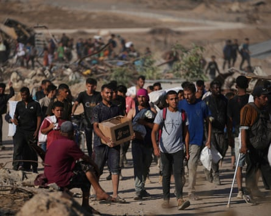

The Israeli military has launched an investigation into possible war crimes following growing evidence that troops have deliberately fired at Palestinian civilians gathering to receive aid in Gaza.
Hundreds of people have been killed in recent weeks after being subjected to air attacks, shootings and bombardments by the Israel Defense Forces (IDF) while waiting for food to be distributed or while making their way to distribution sites.
On Friday the Israeli newspaper Haaretz quoted unnamed Israeli soldiers as saying they had been told to fire at crowds near food distribution sites to keep them away from Israeli military positions. The soldiers said they had concerns about using unnecessary lethal force against people who appeared to pose no threat.
Haaretz also quoted unnamed sources as saying that the army unit established to review incidents that may involve breaches of international law had been tasked with examining soldiers’ actions near distribution locations over the past month.
In a statement reported by Israeli media, the IDF rejected the accusations , saying that no forces had been ordered “to deliberately shoot at civilians, including those approaching the distribution centers”.
“To be clear, IDF directives prohibit deliberate attacks on civilians,” the IDF said.
In a joint statement issued late on Friday, Benjamin Netanyahu, Israel’s prime minister, and Israel Katz, the defence minister, accused Haaretz of “malicious falsehoods designed to defame the IDF, the most moral military in the world”.
Palestinians carry humanitarian aid packages near the Gaza Humanitarian Foundation distribution centre on Thursday.Photograph: Abdel Kareem Hana/AP
Food has become extremely scarce in Gaza since a tight blockade on all supplies was imposed by Israel throughout March and April, threatening many of the 2.3 million people who live there with famine.
Since the blockade was partly lifted last month, the UN has tried to bring in aid but has faced major obstacles, including rubble-choked roads, Israeli military restrictions, continuing airstrikes and growing anarchy. Hundreds of trucks have been looted by armed gangs and by crowds of desperate Palestinians.
On Thursday, 18 people were killed in an Israeli strike targeting Palestinian police distributing flour in a market in the central Gaza city of Deir al-Balah, medical officials said.
The strike appears to have targeted members of a security force set up by the Hamas-led interior ministry to target looters and merchants who sell stolen aid at high prices.
The unit, known as Sahm, or Arrow , confiscates stolen aid which it then distributes. Witnesses said many of the casualties were ordinary civilians who had gathered to receive sacks of flour from a warehouse near the Baraka crossroads in the northern part of Deir al-Balah.
The dead included a child and at least seven Sahm members, according to the nearby al-Aqsa Martyrs hospital, where casualties were taken. There was no immediate comment on the attack from the Israeli military.
Razeq Abu Mandil, a paramedic from the al-Maghazi refugee camp, said: “Among the injured were men, women, and children. In my ambulance, there was a woman and her daughter – both wounded.
“When we arrived, there were people torn to pieces – severely wounded and dead … We started transporting the injured and the dead to the hospital, then returned again to load the ambulances. I repeated this three or four times. The situation in the hospital was catastrophic.”
Ahmed Abu Zubeida, 36, from nearby al-Bureij, was among the wounded.
“I was far from the point of impact but some shrapnel injured my leg. I looked around and saw people lying on the ground – torn bodies, wounded individuals, blood and its smell filling the air, cries and screams,” he said.
The strike came shortly after Israel closed crossings into northern Gaza , cutting the most direct route for aid to the parts of the territory where the humanitarian crisis is most acute.

A mourner during the funeral of Palestinians who, according to the Gaza health ministry, were killed in the strike in Deir al-Balah on Thursday.Photograph: Ramadan Abed/Reuters
For most of the war, aid in Gaza was distributed mainly by the UN and other international humanitarian organisations, but Israel said Hamas diverted and sold supplies to finance its military and other operations.
The UN and other aid groups deny the charge and say their monitoring of their distribution networks is robust. Israel has backed an American private contractor, the Gaza Humanitarian Foundation (GHF), which started distributing food boxes in Gaza last month from four hubs.
To reach the GHF sites, which open intermittently and unpredictably and often at night, Palestinians must cross rubble-strewn roads and Israeli military zones where witnesses say troops often fire on them with mortars, tanks and machine guns.
A senior aid official in Gaza said many of the shootings occurred in darkness when civilians gathered near Israeli troops to wait for distribution sites to open or to receive aid looted from trucks.
“The soldiers fire to keep them away, or because they don’t know who is there, or because they don’t care, or all three,” the official said. Medical records from independent NGOs working in Gaza, seen by the Guardian, confirm hundreds of lethal injuries from bullets and some from shelling.
The IDF insists its internal processes are robust but critics say few investigations are thoroughly pursued and only a tiny fraction result in any sanction.
Israel has continued to allow a smaller number of aid trucks into Gaza for distribution by the UN and other organisations, with about 70 entering the territory each day on Monday and Tuesday. On Thursday, Israel shut entry points used to access directly the north of the territory, where the need for aid is greatest.
António Guterres, the UN secretary general, said on Friday that the US-backed aid operation in Gaza is “inherently unsafe”, giving a blunt assessment: “It is killing people.”
“People are being killed simply trying to feed themselves and their families. The search for food must never be a death sentence,” Guterres told reporters.
The war was triggered by a Hamas attack on southern Israel in which militants killed 1,200 people, mostly civilians, and took 251 hostage.
The overall death toll in Gaza in the 20-month conflict has reached 56,331 fatalities, mostly civilians, according to local health authorities.
Associated Press and Reuters contributed to this report